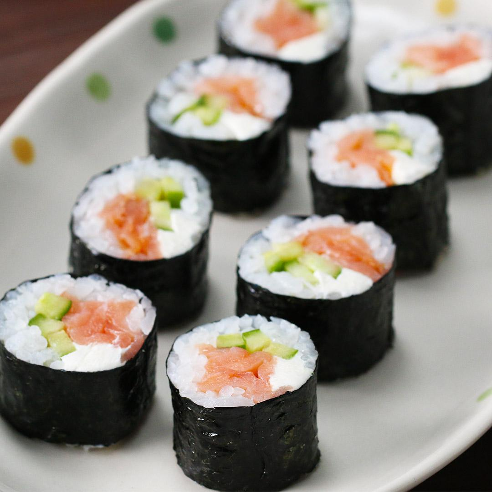

The Philadelphia Roll is a sushi roll loved by many in the United States! People believe it is named so because of its usage of cream cheese in the roll. However, according to this article on Mashed, although some people "may recognize that the Philadelphia roll is named after the cream cheese", the roll was actually named "after Philadelphia to brand it with the dairy farmlands" for which it was once known for. Nevertheless, if you enjoy cream cheese with your food, then this is the sushi roll for you!